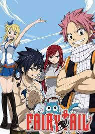
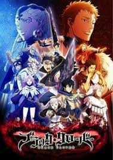
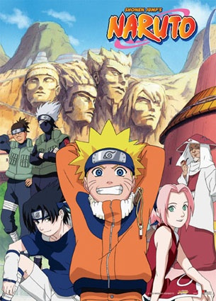
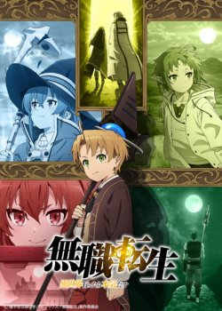
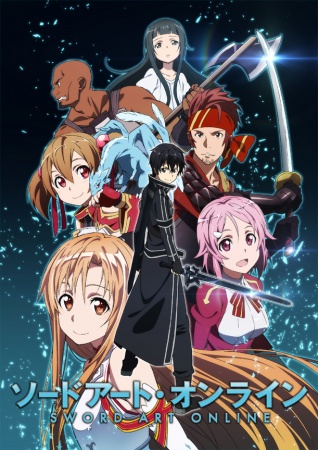
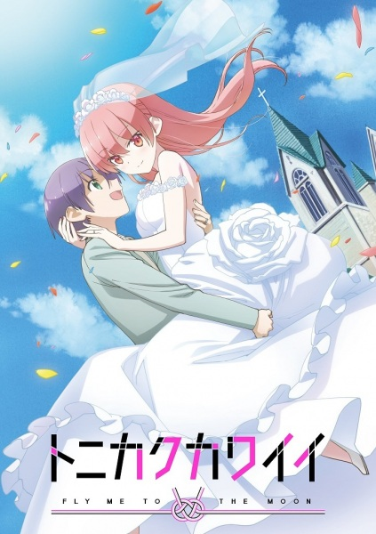
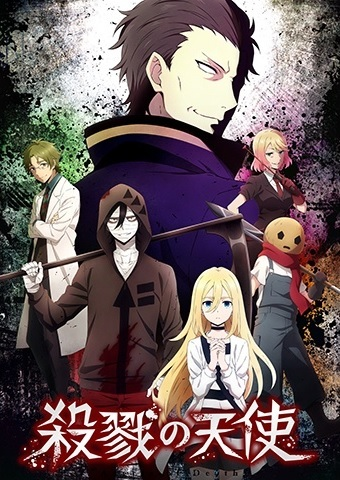
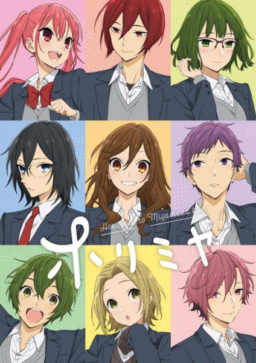

Лучшее аниме по моему мнению:
Сказка о хвосте феи

Описание:
События разворачиваются в выдуманной стране, где всё пропитано волшебством. В Королевстве магия является совершенно обычной вещью, без которой не могут обойтись местные жители. Все, кто владеет магическими способностями, входят в состав гильдий, которые давно стали основной составляющей обители. Люси – миловидная юная девушка, только начинающая путь юной волшебницы. Она мечтает вступить в гильдию «Хвост Феи», являющегося самым престижным и сильным на всей королевской территории. Но попасть в заветную организацию достаточно сложно.
Для начала претендентам необходимо заручиться рекомендацией полноправных членов. К счастью Люси знакомится с Нацу, а также его забавным другом Хэппи. Эти два уникальных персонажа оказались резидентами знаменитой гильдии, а значит, у девушки наконец-то появилась возможность подружиться с нужными людьми и в ближайшем будущем перевоплотиться в их полноценную коллегу. Но исполнится ли её заветная мечта?
Черный Клевер

Описание:
Ещё младенцами в один и тот же день Аста с Юно были подброшены под двери церкви одной отдалённой деревни. Годы шли, мальчики росли, а миром вокруг них правила магия. Юно оказался по-настоящему одарённым чародеем, а Аста не мог наколдовать и простейшее из заклинаний. На свой пятнадцатый день рождения юноши получат свою собственную книгу заклинаний — гримуар. Лучшие друзья в прошлом, а ныне соперники… Они делят одну мечту на двоих. Каждый из них хочет стать Королём-чародеем. А сдаваться — это не про них!
Наруто

Описание:
Существует мир, что никак не схож с нашим, современным и развивающимся. Этот мир – далекий от стереотипа, что привыкли лицезреть каждый день, когда встаем на тягостную работу или же на учебу. В данном "неизведанном" для нас обществе, что развивается странным образом, далекое средневековье, со своими устоявшимися законами и порядками, с лордами и купцами, совмещается со странными людьми, что кличут себя как «ниндзя», могут сидеть на диванчике и смотреть старенький телевизор по выходным. Каждый ниндзя, что живет в этом мире, покорил три великих пути – путь тела, иллюзии и скрытого – тайдзюцу, ниндзюцу и гендзюцу. Каждая из дисциплин имеет уникальные особенности и особые задачи.
Ничто не остается как прежде – видоизменяется. История начинается с битвы, сражение, которое никто не мог ожидать – на деревню напал зловещий демон – девятихвостый Лис – кьюби. Конечно, жители деревни справились, но ценой жизни правителя, что заточил монстра в теле младенца. Ребенок вырос, стал непоседой. Имя ему – Наруто Узумаки. Мальчик вот-вот закончил академию ниндзя, теперь, ему предстоит идти до самого победного конца, чтобы осуществить заветную мечту, о которой Наруто грезит всю жизнь – стать Хокагэ – вождем деревни, что скрыта в листве. Много соперников встретит юнец, но это путь ниндзя! Путь Узумаки! Путь настоящего Хокагэ!
Реинкарнация безработного: История о приключениях в другом мире

Описание:
В этом новом мире я возьмусь за голову!» Встречайте: девственник, затворник и безработный 34 лет от роду. В день похорон родителей его выгоняют из дома, а немногим позже он погибает под колёсами грузовика. Казалось бы, на этом сказочке конец… но нет! Он оказывается в теле младенца уже в другом, фэнтезийном мире. Отброс, чья жизни не стоила и ломаного гроша, перерождается как Рудеус Грейрат. Теперь уж точно он не позволит себе скатиться на дно! Впереди юного Грейрата ждут встреча с вечно молодой колдуньей, красивой эльфийкой, свирепой благородной девицей и многими другими, самыми разными существами. Ну и куда же без захватывающих приключений? Бывший затворник начинает книгу своей жизни с чистого листа!
Мастера Меча Онлайн

Описание:
Начало двадцать первого века, японский гений создал вселенную, релиз которой ждал весь мир «искусство меча». Геймеры получили возможность полного погружения. Новинка стала самой ожидаемой и десять тысяч образцов с молниеносной скоростью исчезли с прилавков. Все вошли в реальность, растворившись в ней и собрались в Городе. Появился создатель. Огромная черная тень пояснила участникам, что вернуться в реальный мир возможно только пройдя всю игру. Но есть один жестокий момент, виртуальная смерть означает и смерть в реальной жизни и пройти её наобум не получится. После громких слов создатель испарился, оставив игроков одних.
Реакция на сообщение оказалась разной. Началось отчаяние, кто-то объединился с другими, а некоторые, как герой Кадзуто, пошли по пути одни. Киригая сирота и поэтому попав в этот мир, он ни чего не теряет. Он бета-тестер и зная всё об этой игре, быстро завоевал популярность у игроков. Герой понимает, что без взаимодействия с другими ему не выбраться и приходится налаживать контакты с остальными игроками. А пока идёт бой на мечах, всем предстоит увидеть ещё немало удивительных вещей.
Унеси меня на Луну

Описание:
Парень по имени Наса Юдзаки подвергался насмешкам от своих сверстников из-за своего имени и каждый второй спрашивал: «Пойдёшь ли ты в астронавты?». Конечно, ему это всё не нравилось, поэтому тот начал работать над собой, чтобы стать человеком, над которым не будут смеяться.
В итоге, у него это получилось. Но в одну снежную ночь, перед днём сдачи вступительных экзаменов в лучшую академию страны, он повстречал девушку, которая очаровала его своей красотой. Наса теряет бдительность и его сбивает грузовик...
Цукаса Юдзаки — так зовут загадочную девушку — спасает Насу и в этот же момент он признаётся незнакомке в любви. Она соглашается принять его чувства, но только если они поженятся, а после чего исчезает.
Так проходит несколько лет, Насе уже исполнилось восемнадцать, и Цукаса появляется снова...
Магическая битва

Описание:
Юдзи Итадори — сильный юноша, который ведёт заурядную жизнь старшеклассника. Однажды, чтобы спасти друзей от нападения проклятий, он съедает палец Двуликого призрака, который становится частью его души. С этого момента он делит с ним своё тело. Под присмотром Сатору Годзё, одного из сильнейших магов, Итадори поступает в магический техникум, где учат сражаться с проклятиями.
Ангел кровопролития

Однажды тринадцатилетняя Рэйчел Гарднер устремляется на очередную встречу с психоаналитиком. Это последний жизненный эпизод, который удалось запомнить перед попаданием в странную пустую комнату, частично похожую на медицинский кабинет. Главная героиня оказывается в здании, где гигантское количество капканов и опасностей. Создается впечатление, что она участник какой-то захватывающей компьютерной игры. Вскоре девушка сталкивается с Заком – пугающим парнишкой с забинтованным лицом и огромной косой в руках.
Юноша явно намеревается убить кого-то, поэтому с ним лучше не связываться. Но на жутковатом незнакомце неприятности не заканчиваются. Впереди Рейчел ждут и остальные персонажи, мечтающие превратить испуганную школьницу в собственную жертву. Теперь девчушке приходится прикладывать все усилия, чтобы преодолеть череду непростых испытаний. В определенный момент загнанная пленница даже начинает думать, что проще распрощаться с жизнью, чем мучится и переживать массу отрицательных эмоций. Конечно же, Зак желает уничтожить девчонку, но еще больше он хочет распрощаться со зловещим помещением и очутиться на свободе. Герои решают объединиться.
Хоримия

Описание:
У старшеклассницы Кёко Хори, похоже, есть всё, что только можно пожелать, ведь она умница, красавица и любимица всего класса. Однако даже у идеальных на первый взгляд людей бывают секреты, и один такой есть у Хори: девушка страшно боится, что её одноклассники прознают о том, что вне стен школы она превращается в настоящую домохозяйку, на которую вечно пропадающие на работе родители скинули все домашние хлопоты и младшего брата Соту. Однажды на пороге её дома появляется незнакомец, который держит за руку поранившегося Соту… а ещё он знает Хори! Тут же выясняется, что этот парень на самом деле невзрачный одноклассник Хори, Миямура. Что же произойдёт после встречи популярной красавицы и «серой мышки»? Дружба, любовь?.. Встречайте школьную комедию, полную энергии юности!
Все это это и многое другое,вы можете посмотреть на сайте https://animego.org/